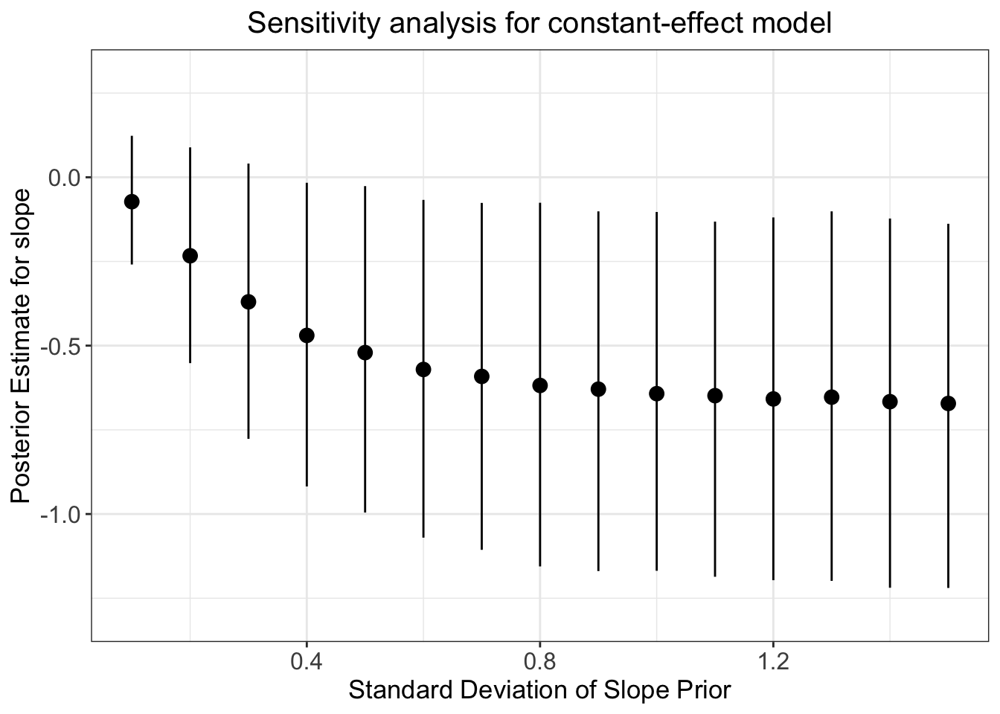
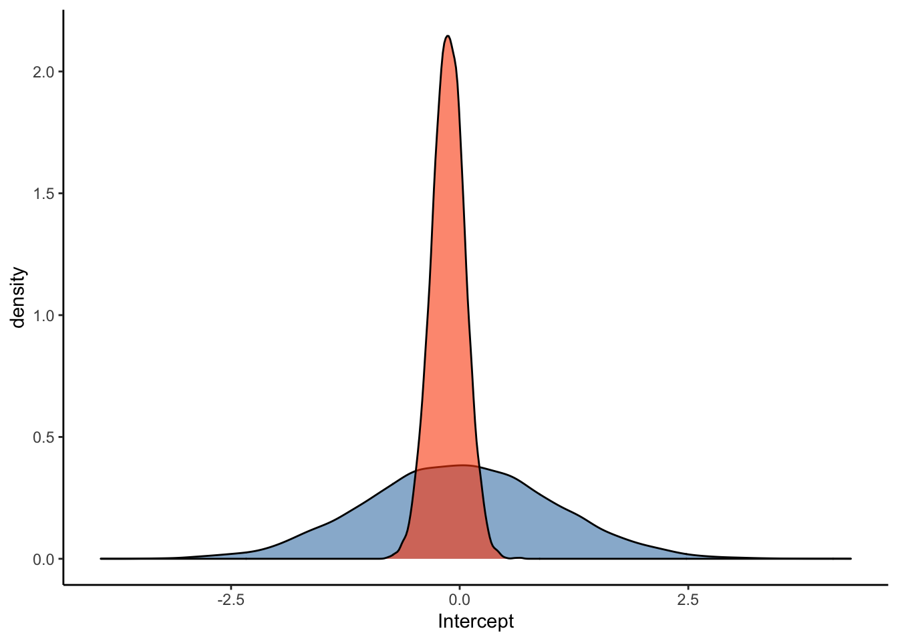
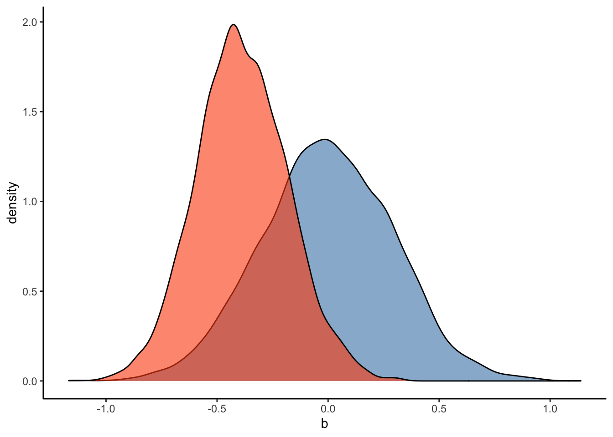
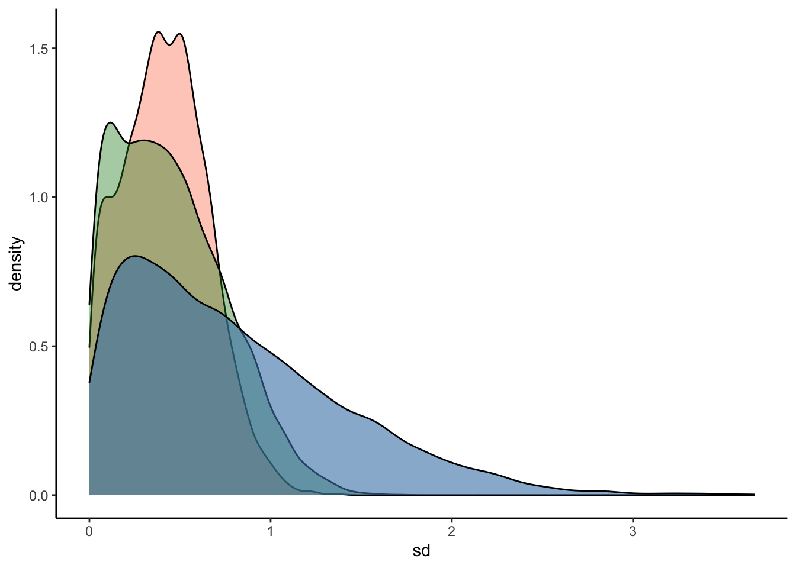
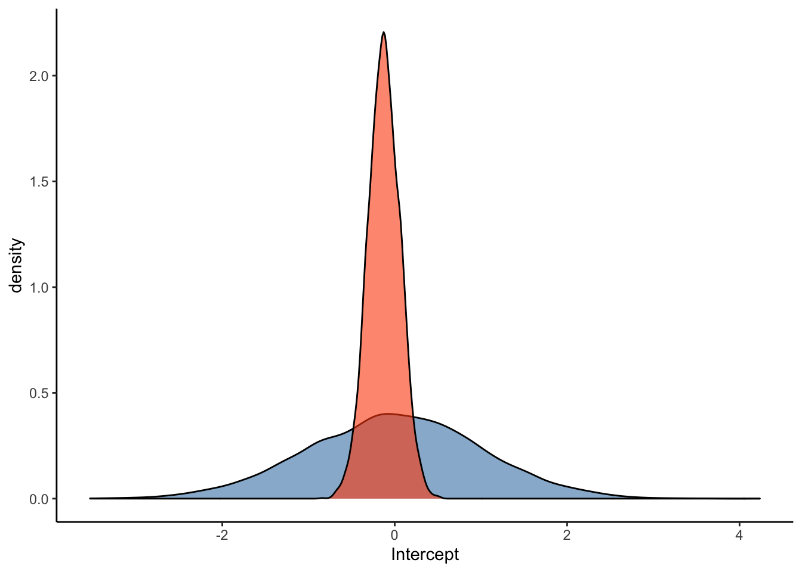
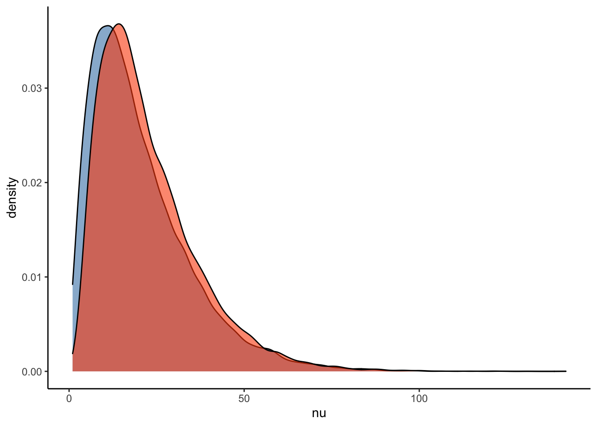
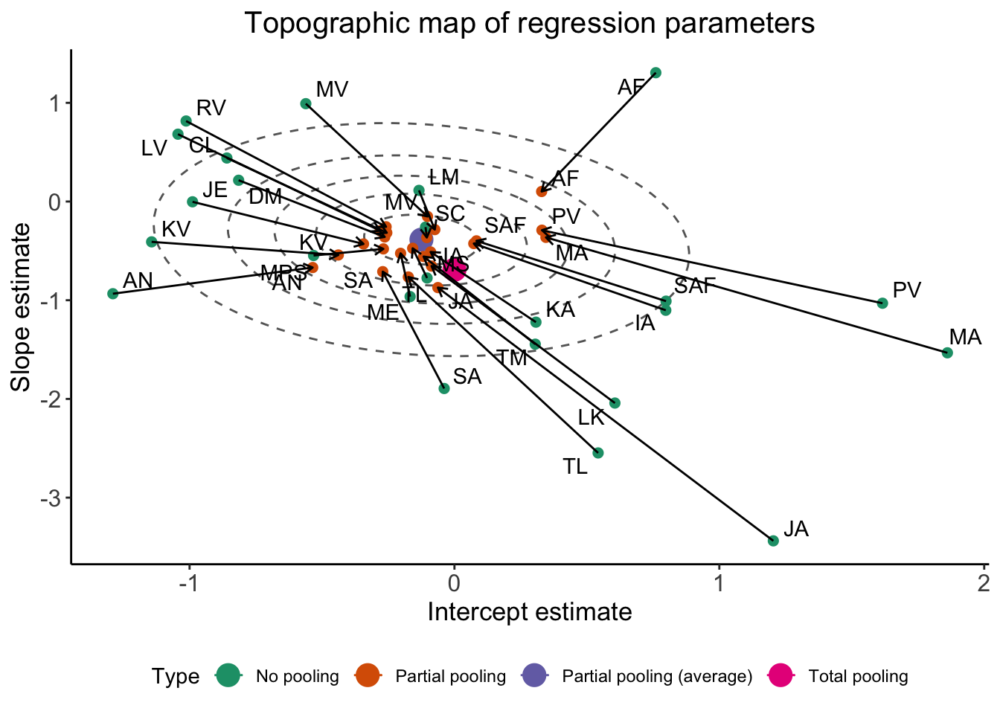

Chapter 4 Multi-level model
4.1 Videos on Multi-level model:
4.2 Hands-on Exercises
4.2.1 Prior Specification
Let’s take our analysis to the next level (pun intended) by making a multi-level model with varying intercepts and varying slopes. In this model, we assign unique intercepts and slopes for each subject and assign them a common prior distribution. Let’s check which priors we need to specify for this model:
Articulation_f3 <- bf(ArticulationS ~ 1 + Register + (1+Register|Subject))
get_prior(Articulation_f3,
data = d,
family = gaussian)## prior class coef group resp dpar nlpar bound
## (flat) b
## (flat) b RegisterIDS
## lkj(1) cor
## lkj(1) cor Subject
## student_t(3, -0.4, 2.5) Intercept
## student_t(3, 0, 2.5) sd
## student_t(3, 0, 2.5) sd Subject
## student_t(3, 0, 2.5) sd Intercept Subject
## student_t(3, 0, 2.5) sd RegisterIDS Subject
## student_t(3, 0, 2.5) sigma
## source
## default
## (vectorized)
## default
## (vectorized)
## default
## default
## (vectorized)
## (vectorized)
## (vectorized)
## defaultThe output of the above function tells us that we now have three sources of variation in the model: i) the usual standard deviation of the residuals (i.e., ‘sigma’), ii) the standard deviation of the population of by-subject varying intercepts (i.e., ‘Intercept’), and ii) the standard deviation of the population of by-subject varying slopes (i.e., ‘RegisterIDS’). The latter two sources of variation provide one of the most essential features of multi-level models: partial pooling, as we discussed in the lecture.
We are also told that we need to specify a prior for the correlation between the varying intercepts and the varying slopes (i.e. class = ‘cor’). This correlation captures the fact that we cannot assume the intercept and slope to be entirely independent. For example, caregivers who naturally produce a small vowel space in ADS can expand their vowel space when using IDS to a greater extent and may therefore show stronger effects.
We model the correlation between varying intercepts and slopes by using a so-called LKJ prior. The basic idea of the LKJ prior is that as its parameter increases, the prior favors less extreme correlations - that is, if we specify the LKJ parameter as 1, the prior represents a uniform, uninformative distribution (similar to that of a beta(1,1) distribution). If we set the parameter to 2, on the other hand, the prior serves to dampen the likelihood of extreme correlations, and we represent our lack of knowledge about the extent of correlation between the parameters. We’ll see what our prior(lkj(2), class = cor) looks like in the prior-posterior update plot below.
As usual, let’s start by performing a prior predictive check:
Articulation_p3 <- c(
prior(normal(0, 1), class = Intercept),
prior(normal(0, 1), class = sd, coef = Intercept, group = Subject),
prior(normal(0, 0.3), class = b),
prior(normal(0, 1), class = sd, coef = RegisterIDS, group = Subject),
prior(normal(1, 0.5), class = sigma),
prior(lkj(2), class = cor))
Articulation_m3_prior <-
brm(
Articulation_f3,
data = d,
save_pars = save_pars(all = TRUE),
family = gaussian,
prior = Articulation_p3,
#file = "Articulation_m3_prior",
sample_prior = "only",
iter = 5000,
warmup = 1000,
cores = 2,
chains = 2,
backend = "cmdstanr",
threads = threading(2),
control = list(
adapt_delta = 0.999,
max_treedepth = 20))
pp_check(Articulation_m3_prior, ndraws=100)
After running the pp_check() function a couple of times, we should be convinced that our priors are within the order of magnitude that we expect. Great, let’s run the model on the actual data then:
4.2.2 Multi-Level Model
Articulation_m3 <-
brm(
Articulation_f3,
data = d,
save_pars = save_pars(all = TRUE),
family = gaussian,
prior = Articulation_p3,
#file = "Articulation_m3",
sample_prior = T,
iter = 5000,
warmup = 1000,
cores = 2,
chains = 2,
backend = "cmdstanr",
threads = threading(2),
control = list(
adapt_delta = 0.999,
max_treedepth = 20))As usual, let’s perform some posterior predictive checks to make sure that the model captures the data:
pp_check(Articulation_m3, ndraws=100)
Everything looks great, so let’s plot the conditional effects and compare the output of the multi-level model with that of the previous constant-effect model:
plot(conditional_effects(Articulation_m3), points = T)#summary of the multi-level model:
summary(Articulation_m3)## Warning: There were 1 divergent transitions after warmup. Increasing adapt_delta
## above may help. See http://mc-stan.org/misc/warnings.html#divergent-transitions-
## after-warmup## Family: gaussian
## Links: mu = identity; sigma = identity
## Formula: ArticulationS ~ 1 + Register + (1 + Register | Subject)
## Data: d (Number of observations: 48)
## Draws: 2 chains, each with iter = 4000; warmup = 0; thin = 1;
## total post-warmup draws = 8000
##
## Group-Level Effects:
## ~Subject (Number of levels: 24)
## Estimate Est.Error l-95% CI u-95% CI Rhat Bulk_ESS
## sd(Intercept) 0.41 0.24 0.03 0.90 1.00 1220
## sd(RegisterIDS) 0.45 0.30 0.02 1.09 1.00 1278
## cor(Intercept,RegisterIDS) -0.04 0.42 -0.77 0.77 1.00 4556
## Tail_ESS
## sd(Intercept) 2941
## sd(RegisterIDS) 1983
## cor(Intercept,RegisterIDS) 5486
##
## Population-Level Effects:
## Estimate Est.Error l-95% CI u-95% CI Rhat Bulk_ESS Tail_ESS
## Intercept -0.12 0.18 -0.48 0.23 1.00 6419 5607
## RegisterIDS -0.39 0.20 -0.77 0.01 1.00 8035 5680
##
## Family Specific Parameters:
## Estimate Est.Error l-95% CI u-95% CI Rhat Bulk_ESS Tail_ESS
## sigma 0.84 0.15 0.52 1.12 1.00 1012 709
##
## Draws were sampled using sample(hmc). For each parameter, Bulk_ESS
## and Tail_ESS are effective sample size measures, and Rhat is the potential
## scale reduction factor on split chains (at convergence, Rhat = 1).#summary of the constant-effect model:
summary(Articulation_m2)## Family: gaussian
## Links: mu = identity; sigma = identity
## Formula: ArticulationS ~ 1 + Register
## Data: d (Number of observations: 48)
## Draws: 2 chains, each with iter = 4000; warmup = 0; thin = 1;
## total post-warmup draws = 8000
##
## Population-Level Effects:
## Estimate Est.Error l-95% CI u-95% CI Rhat Bulk_ESS Tail_ESS
## Intercept -0.16 0.17 -0.49 0.16 1.00 6403 5168
## RegisterIDS -0.36 0.21 -0.76 0.05 1.00 5968 4631
##
## Family Specific Parameters:
## Estimate Est.Error l-95% CI u-95% CI Rhat Bulk_ESS Tail_ESS
## sigma 0.98 0.11 0.80 1.21 1.00 5444 5040
##
## Draws were sampled using sample(hmc). For each parameter, Bulk_ESS
## and Tail_ESS are effective sample size measures, and Rhat is the potential
## scale reduction factor on split chains (at convergence, Rhat = 1).Q5: How does the estimate for sigma (i.e. the residual variation) in this multi-level model differ from the simple regression model? What does this indicate?
Answer:
4.2.3 Prior-Posterior Update Plots
Let’s create some prior-posterior update plots so we can visualise how our model updates after seeing the data:
#Sample the parameters of interest:
Posterior_m3 <- as_draws_df(Articulation_m3)
#Plot the prior-posterior update plot for the intercept:
ggplot(Posterior_m3) +
geom_density(aes(prior_Intercept), fill="steelblue", color="black",alpha=0.6) +
geom_density(aes(b_Intercept), fill="#FC4E07", color="black",alpha=0.6) +
xlab('Intercept') +
theme_classic()
#Plot the prior-posterior update plot for b:
ggplot(Posterior_m3) +
geom_density(aes(prior_b), fill="steelblue", color="black",alpha=0.6) +
geom_density(aes(b_RegisterIDS), fill="#FC4E07", color="black",alpha=0.6) +
xlab('b') +
theme_classic()
#Plot the prior-posterior update plot for sd of intercepts and slopes:
ggplot(Posterior_m3) +
geom_density(aes(sd_Subject__Intercept), fill="#FC4E07", color="black",alpha=0.3) +
geom_density(aes(sd_Subject__RegisterIDS), fill="#228B22", color="black",alpha=0.4) +
geom_density(aes(prior_sd_Subject__RegisterIDS), fill="steelblue", color="black",alpha=0.6) +
xlab('sd') +
theme_classic()
#Plot the prior-posterior update plot for sigma:
ggplot(Posterior_m3) +
geom_density(aes(prior_sigma), fill="steelblue", color="black",alpha=0.6) +
geom_density(aes(sigma), fill="#FC4E07", color="black",alpha=0.6) +
xlab('sigma') +
theme_classic()#Plot the prior-posterior update plot for the correlation between varying intercepts and slopes:
ggplot(Posterior_m3) +
geom_density(aes(prior_cor_Subject), fill="steelblue", color="black",alpha=0.6) +
geom_density(aes(cor_Subject__Intercept__RegisterIDS), fill="#FC4E07", color="black",alpha=0.6) +
xlab('cor') +
theme_classic()4.2.4 Hypothesis Testing
Let’s test our hypothesis with this model by using the hypothesis() function:
#overall
hypothesis(Articulation_m3, "RegisterIDS < 0")## Hypothesis Tests for class b:
## Hypothesis Estimate Est.Error CI.Lower CI.Upper Evid.Ratio Post.Prob
## 1 (RegisterIDS) < 0 -0.39 0.2 -0.71 -0.05 33.33 0.97
## Star
## 1 *
## ---
## 'CI': 90%-CI for one-sided and 95%-CI for two-sided hypotheses.
## '*': For one-sided hypotheses, the posterior probability exceeds 95%;
## for two-sided hypotheses, the value tested against lies outside the 95%-CI.
## Posterior probabilities of point hypotheses assume equal prior probabilities.#for individual subjectss:
hypothesis(Articulation_m3, "RegisterIDS < 0", group = "Subject", scope="coef")## Hypothesis Tests for class :
## Group Hypothesis Estimate Est.Error CI.Lower CI.Upper Evid.Ratio
## 1 AF (RegisterIDS) < 0 0.09 0.64 -0.72 1.32 1.10
## 2 AN (RegisterIDS) < 0 -0.66 0.52 -1.61 0.06 14.47
## 3 CL (RegisterIDS) < 0 -0.31 0.47 -1.03 0.49 3.80
## 4 DM (RegisterIDS) < 0 -0.36 0.46 -1.10 0.43 4.45
## 5 IA (RegisterIDS) < 0 -0.42 0.46 -1.19 0.32 5.66
## 6 JA (RegisterIDS) < 0 -0.85 0.67 -2.18 -0.05 26.30
## 7 JE (RegisterIDS) < 0 -0.43 0.45 -1.16 0.30 5.97
## 8 KA (RegisterIDS) < 0 -0.51 0.45 -1.32 0.18 8.65
## 9 KV (RegisterIDS) < 0 -0.53 0.47 -1.36 0.19 9.14
## 10 LK (RegisterIDS) < 0 -0.64 0.50 -1.60 0.06 14.07
## 11 LM (RegisterIDS) < 0 -0.29 0.45 -0.96 0.50 3.52
## 12 LV (RegisterIDS) < 0 -0.29 0.46 -0.99 0.53 3.54
## 13 MA (RegisterIDS) < 0 -0.36 0.50 -1.21 0.45 3.91
## 14 ME (RegisterIDS) < 0 -0.52 0.45 -1.32 0.15 9.15
## 15 MPS (RegisterIDS) < 0 -0.48 0.46 -1.28 0.25 7.24
## 16 MS (RegisterIDS) < 0 -0.46 0.45 -1.24 0.24 7.22
## 17 MV (RegisterIDS) < 0 -0.15 0.49 -0.83 0.79 2.23
## 18 PV (RegisterIDS) < 0 -0.29 0.50 -1.06 0.57 3.25
## 19 RV (RegisterIDS) < 0 -0.26 0.48 -0.96 0.61 3.07
## 20 SA (RegisterIDS) < 0 -0.70 0.53 -1.71 0.01 17.26
## 21 SAF (RegisterIDS) < 0 -0.40 0.46 -1.17 0.35 5.25
## 22 SC (RegisterIDS) < 0 -0.37 0.44 -1.07 0.37 4.71
## 23 TL (RegisterIDS) < 0 -0.76 0.57 -1.88 -0.03 22.46
## 24 TM (RegisterIDS) < 0 -0.55 0.48 -1.42 0.14 9.97
## Post.Prob Star
## 1 0.52
## 2 0.94
## 3 0.79
## 4 0.82
## 5 0.85
## 6 0.96 *
## 7 0.86
## 8 0.90
## 9 0.90
## 10 0.93
## 11 0.78
## 12 0.78
## 13 0.80
## 14 0.90
## 15 0.88
## 16 0.88
## 17 0.69
## 18 0.76
## 19 0.75
## 20 0.95
## 21 0.84
## 22 0.82
## 23 0.96 *
## 24 0.91
## ---
## 'CI': 90%-CI for one-sided and 95%-CI for two-sided hypotheses.
## '*': For one-sided hypotheses, the posterior probability exceeds 95%;
## for two-sided hypotheses, the value tested against lies outside the 95%-CI.
## Posterior probabilities of point hypotheses assume equal prior probabilities.4.2.5 Prior Sensitivity Check
These results look interesting - however, we may be worried about the influence of our priors. Let’s conduct a prior robustness check for this multi-level model to calm our worries:
#code to loop through sd of intercept prior:
priSD <- seq(0.1, 1.5, length.out = 15)
priorsN <- Articulation_p3
#create empty sets to store output of the loop:
post_pred <- c()
post_pred_lci <- c()
post_pred_uci <- c()
for (i in 1:length(priSD)) {
priorsN[3,] <- set_prior(paste0("normal(0, ", priSD[i],")"), class = "b")
model_for_loop <- brm(Articulation_f3,
data = d,
family = gaussian,
prior = priorsN,
sample_prior = T,
warmup = 1000,
iter = 5000,
cores = 2,
chains = 2,
backend = "cmdstanr",
threads = threading(2),
save_pars = save_pars(all = TRUE),
control = list(adapt_delta = 0.99,
max_treedepth = 15))
post_preds <- spread_draws(model_for_loop, b_RegisterIDS)
post_pred[i] <- median(post_preds$b_RegisterIDS)
post_pred_lci[i] <- quantile(post_preds$b_RegisterIDS, prob = 0.025)
post_pred_uci[i] <- quantile(post_preds$b_RegisterIDS, prob = 0.975)
}
models_data <- data.frame(priSD, post_pred, post_pred_lci, post_pred_uci)
ggplot(data=models_data, aes(x=priSD, y=post_pred)) +
geom_point(size = 3) +
geom_pointrange(ymin = post_pred_lci, ymax = post_pred_uci) +
ylim(-1.3, 0.3) +
labs(x="Standard Deviation of Slope Prior",
y="Posterior Estimate for slope",
title="Sensitivity analysis for multi-level model") +
theme_bw() +
theme(plot.title = element_text(hjust = 0.5, size = 15),
axis.title.x = element_text(size = 13),
axis.text.y = element_text(size = 12),
axis.text.x = element_text(size = 12),
axis.title.y = element_text(size = 13))
Q6: How does this prior robustness check compare to that of the simple linear regression model?
Answer:
4.2.6 Partial Pooling
The following code shows how to extract relevant data from the models and how to plot partial pooling:
plot_df <- tibble(
Subject = rownames(coef(Articulation_m3)[["Subject"]][,,"Intercept"]),
ADS = coef(Articulation_m3)[["Subject"]][,,"Intercept"][,1],
IDS = ADS + coef(Articulation_m3)[["Subject"]][,,"RegisterIDS"][,1],
Type = "partial pooling"
) %>% pivot_longer(ADS:IDS) %>% dplyr::rename(
Register = name,
ArticulationS = value
)
df <- d[, c("Subject", "Register", "ArticulationS")] %>%
mutate(Type = "no pooling")
pool_df <- df[,c("Subject", "Register")] %>%
mutate(
ArticulationS = ifelse(Register=="ADS", mean(df$ArticulationS[df$Register=="ADS"]), mean(df$ArticulationS[df$Register=="IDS"])),
Type = "total pooling"
)
plot_df <- rbind(plot_df,df)
plot_df <- rbind(plot_df,pool_df)
plot_df <- plot_df %>%
mutate(Register=as.numeric(as.factor(Register)))
ggplot(plot_df, aes(Register, ArticulationS, color = Type)) +
geom_path(size = 1) +
geom_point() +
facet_wrap(.~Subject) +
scale_x_continuous(breaks=seq(1, 2, 1)) +
theme_bw() +
theme(axis.title.x = element_text(size = 13),
axis.text.y = element_text(size = 12),
axis.text.x = element_text(size = 12),
axis.title.y = element_text(size = 13),
strip.background = element_rect(color="white", fill="white", size=1.5, linetype="solid"),
strip.text.x = element_text(size = 10, color = "black"))
The following code shows how to plot partial pooling:
### Now the ellipsis plot
## Partial pooling
df_partial <- tibble(
Subject = rownames(coef(Articulation_m3)[["Subject"]][,,"Intercept"]),
ADS = coef(Articulation_m3)[["Subject"]][,,"Intercept"][,1],
RegisterIDS = coef(Articulation_m3)[["Subject"]][,,"RegisterIDS"][,1],
Type = "Partial pooling"
)
## Original data
df_no <- NULL
for (s in unique(d$Subject)){
tmp <- tibble(
Subject = s,
ADS = d$ArticulationS[d$Register=="ADS" & d$Subject==s],
RegisterIDS = d$ArticulationS[d$Register=="IDS" & d$Subject==s] - d$ArticulationS[d$Register=="ADS" & d$Subject==s],
Type = "No pooling"
)
if (exists("df_no")){df_no = rbind(df_no, tmp)} else {df_no = tmp}
}
df_total <- df_no[,c("Subject")] %>%
mutate(
ADS = mean(d$ArticulationS[d$Register=="ADS"]),
RegisterIDS = mean(d$ArticulationS[d$Register=="IDS"]) - mean(d$ArticulationS[d$Register=="ADS"]),
Type = "Total pooling"
)
df_fixef <- tibble(
Type = "Partial pooling (average)",
ADS = fixef(Articulation_m3)[1],
RegisterIDS = fixef(Articulation_m3)[2]
)
# Complete pooling / fixed effects are center of gravity in the plot
df_gravity <- df_total %>%
distinct(Type, ADS, RegisterIDS) %>%
bind_rows(df_fixef)
df_gravity## # A tibble: 2 × 3
## ADS RegisterIDS Type
## <dbl> <dbl> <chr>
## 1 1.83e-16 -0.691 Total pooling
## 2 -1.23e- 1 -0.389 Partial pooling (average)df_pulled <- bind_rows(df_no, df_partial)
# Extract the variance covariance matrix
cov_mat_t <- VarCorr(Articulation_m3)[["Subject"]]$cov
cov_mat <- matrix(nrow=2, ncol=2)
cov_mat[1,1]<-cov_mat_t[,,"Intercept"][1,1]
cov_mat[2,1]<-cov_mat_t[,,"RegisterIDS"][1,1]
cov_mat[1,2]<-cov_mat_t[,,"Intercept"][2,1]
cov_mat[2,2]<-cov_mat_t[,,"RegisterIDS"][2,1]
cov_mat## [,1] [,2]
## [1,] 0.22634014 -0.03015617
## [2,] -0.03015617 0.29111834make_ellipse <- function(cov_mat, center, level) {
ellipse(cov_mat, centre = center, level = level) %>%
as.data.frame() %>%
add_column(level = level) %>%
as_tibble()
}
center <- fixef(Articulation_m3)
levels <- c(.1, .3, .5, .7, .9)
# Create an ellipse dataframe for each of the levels defined
# above and combine them
df_ellipse <- levels %>%
purrr::map_df(~ make_ellipse(cov_mat, center, level = .x)) %>%
dplyr::rename(ADS = x, RegisterIDS = y)
df_ellipse## # A tibble: 500 × 3
## ADS RegisterIDS level
## <dbl> <dbl> <dbl>
## 1 0.0222 -0.224 0.1
## 2 0.0116 -0.213 0.1
## 3 0.000381 -0.202 0.1
## 4 -0.0113 -0.192 0.1
## 5 -0.0234 -0.183 0.1
## 6 -0.0360 -0.175 0.1
## 7 -0.0489 -0.167 0.1
## 8 -0.0620 -0.161 0.1
## 9 -0.0755 -0.155 0.1
## 10 -0.0891 -0.150 0.1
## # … with 490 more rowsGaussian_ellipsis <- ggplot(df_pulled) +
aes(x = ADS, y = RegisterIDS, color = Type) +
# Draw contour lines from the distribution of effects
geom_path(
aes(group = level, color = NULL),
data = df_ellipse,
linetype = "dashed",
color = "grey40"
) +
geom_point(data = df_gravity, size = 5) +
geom_point(size = 2) +
geom_path(
aes(group = Subject, color = NULL),
arrow = arrow(length = unit(.02, "npc"))
) +
# Use ggrepel to jitter the labels away from the points
ggrepel::geom_text_repel(
aes(label = Subject, color = NULL),
data = df_no
) +
# Don't forget 373
ggrepel::geom_text_repel(
aes(label = Subject, color = NULL),
data = df_partial
) +
ggtitle("Topographic map of regression parameters") +
xlab("Intercept estimate") +
ylab("Slope estimate") +
scale_color_brewer(palette = "Dark2") +
theme_classic() +
theme(plot.title = element_text(hjust = 0.5, size = 15),
legend.position = "bottom",
axis.title.x = element_text(size = 13),
axis.text.y = element_text(size = 12),
axis.text.x = element_text(size = 12),
axis.title.y = element_text(size = 13),
strip.background = element_rect(color="white", fill="white", size=1.5, linetype="solid"))
Gaussian_ellipsis## Warning: ggrepel: 13 unlabeled data points (too many overlaps). Consider
## increasing max.overlaps
4.2.7 Student t model
One of the ways to allow for more flexibility in the distribution of the data would be to model the data using a student t likelihood. The main difference between the Gaussian and student t distribution is that a student t distribution with a low degrees of freedom parameter, nu, has heavier tails than the conventional Gaussian distribution. This form of model thus dampens the influence of outliers - incorporating outliers without allowing them to dominate non-outlier data. You can specify a student likelihood in the model using the ‘family’ parameter. As we can see in the results of the below get_prior() function, we now have to provide an additional prior for nu. For the following student t model, we will set the prior to be gamma(2, 0.1):
Articulation_f3 <- bf(ArticulationS ~ 1 + Register + (1+Register|Subject))
get_prior(Articulation_f3, data = d, family = student)
student_priors <- c(
prior(normal(0, 1), class = Intercept),
prior(normal(0, 1), class = sd, coef = Intercept, group = Subject),
prior(normal(0, 0.3), class = b),
prior(normal(0, 1), class = sd, coef = RegisterIDS, group = Subject),
prior(normal(1, 0.5), class = sigma),
prior(lkj(2), class = cor),
prior(gamma(2, 0.1), class = nu))
Articulation_student_m3 <-
brm(
Articulation_f3,
data = d,
save_pars = save_pars(all = TRUE),
family = student,
prior = student_priors,
#file = "Articulation_student_m3",
sample_prior = T,
iter = 10000,
warmup = 1000,
cores = 2,
chains = 2,
backend = "cmdstanr",
threads = threading(2),
control = list(
adapt_delta = 0.999,
max_treedepth = 20))
summary(Articulation_student_m3)
plot(conditional_effects(Articulation_student_m3), points = T)
Let’s check the prior-posterior update plots for the student t model:
#Sample the parameters of interest:
Posterior_student_m3 <- as_draws_df(Articulation_student_m3)
#Plot the prior-posterior update plot for the intercept:
ggplot(Posterior_student_m3) +
geom_density(aes(prior_Intercept), fill="steelblue", color="black",alpha=0.6) +
geom_density(aes(b_Intercept), fill="#FC4E07", color="black",alpha=0.6) +
xlab('Intercept') +
theme_classic()
#Plot the prior-posterior update plot for b:
ggplot(Posterior_student_m3) +
geom_density(aes(prior_b), fill="steelblue", color="black",alpha=0.6) +
geom_density(aes(b_RegisterIDS), fill="#FC4E07", color="black",alpha=0.6) +
xlab('b') +
theme_classic()
#Plot the prior-posterior update plot for sd of intercepts and slopes:
ggplot(Posterior_student_m3) +
geom_density(aes(sd_Subject__Intercept), fill="#FC4E07", color="black",alpha=0.3) +
geom_density(aes(sd_Subject__RegisterIDS), fill="#228B22", color="black",alpha=0.4) +
geom_density(aes(prior_sd_Subject__RegisterIDS), fill="steelblue", color="black",alpha=0.6) +
xlab('sd') +
theme_classic()
#Plot the prior-posterior update plot for sigma:
ggplot(Posterior_student_m3) +
geom_density(aes(prior_sigma), fill="steelblue", color="black",alpha=0.6) +
geom_density(aes(sigma), fill="#FC4E07", color="black",alpha=0.6) +
xlab('sigma') +
theme_classic()
#Plot the prior-posterior update plot for the correlation between varying intercepts and slopes:
ggplot(Posterior_student_m3) +
geom_density(aes(prior_cor_Subject), fill="steelblue", color="black",alpha=0.6) +
geom_density(aes(cor_Subject__Intercept__RegisterIDS), fill="#FC4E07", color="black",alpha=0.6) +
xlab('cor') +
theme_classic()
#Plot the prior-posterior update plot for the correlation between varying intercepts and slopes:
ggplot(Posterior_student_m3) +
geom_density(aes(prior_nu), fill="steelblue", color="black",alpha=0.6) +
geom_density(aes(nu), fill="#FC4E07", color="black",alpha=0.6) +
xlab('nu') +
theme_classic()
How do the estimates and evidence ratio of the student model compare to that of the Gaussian model?
#hypothesis check for Gaussian model:
hypothesis(Articulation_m3, "RegisterIDS < 0")## Hypothesis Tests for class b:
## Hypothesis Estimate Est.Error CI.Lower CI.Upper Evid.Ratio Post.Prob
## 1 (RegisterIDS) < 0 -0.39 0.2 -0.71 -0.05 33.33 0.97
## Star
## 1 *
## ---
## 'CI': 90%-CI for one-sided and 95%-CI for two-sided hypotheses.
## '*': For one-sided hypotheses, the posterior probability exceeds 95%;
## for two-sided hypotheses, the value tested against lies outside the 95%-CI.
## Posterior probabilities of point hypotheses assume equal prior probabilities.#hypothesis check for student t model:
hypothesis(Articulation_student_m3, "RegisterIDS < 0")## Hypothesis Tests for class b:
## Hypothesis Estimate Est.Error CI.Lower CI.Upper Evid.Ratio Post.Prob
## 1 (RegisterIDS) < 0 -0.39 0.21 -0.72 -0.04 29.82 0.97
## Star
## 1 *
## ---
## 'CI': 90%-CI for one-sided and 95%-CI for two-sided hypotheses.
## '*': For one-sided hypotheses, the posterior probability exceeds 95%;
## for two-sided hypotheses, the value tested against lies outside the 95%-CI.
## Posterior probabilities of point hypotheses assume equal prior probabilities.Here is some code to plot the posterior student model estimates for each individual subject:
ADS_data <- spread_rvars(Articulation_student_m3, r_Subject[r_Subject, Intercept], b_Intercept, b_RegisterIDS) %>%
mutate(Subject_estimate = r_Subject + b_Intercept) %>%
mutate(Intercept = replace(Intercept, Intercept == "Intercept", "ADS")) %>%
mutate(Intercept = replace(Intercept, Intercept == "RegisterIDS", "IDS")) %>%
filter(Intercept == "ADS")
IDS_data <- spread_rvars(Articulation_student_m3, r_Subject[r_Subject, Intercept], b_Intercept, b_RegisterIDS) %>%
mutate(Subject_estimate = r_Subject + b_RegisterIDS) %>%
mutate(Intercept = replace(Intercept, Intercept == "Intercept", "ADS")) %>%
mutate(Intercept = replace(Intercept, Intercept == "RegisterIDS", "IDS")) %>%
filter(Intercept == "IDS")
posterior_data_plot <- rbind(ADS_data, IDS_data) %>%
median_qi(Subject_estimate) %>%
mutate(Subject = rep(unique(d$Subject), 2))
student_model_plot <- ggplot() +
geom_point(aes(x = Intercept, y = Subject_estimate), data = posterior_data_plot, size = 2.5, color = "black", ) +
geom_point(aes(x = Intercept, y = Subject_estimate, color = Subject), data = posterior_data_plot, size = 1.5) +
geom_path(aes(x = Intercept, y = Subject_estimate, color = Subject, group = Subject), data = posterior_data_plot, alpha = 0.7, linetype = 1) +
theme_bw() +
ylim(c(-0.75, 0.3)) +
xlab('Speech Style') +
ylab('Effect Size') +
ggtitle('Student Model') +
scale_color_manual(values=viridis(n = 27)) +
theme(plot.title = element_text(hjust = 0.5, size=15),
legend.position = "none",
axis.text.x = element_text(size = 13),
axis.title.x = element_text(size = 13),
axis.text.y = element_text(size = 12),
axis.title.y = element_text(size = 13))Let’s compare these estimates with the multi-level Gaussian model:
ADS_data <- spread_rvars(Articulation_m3, r_Subject[r_Subject, Intercept], b_Intercept, b_RegisterIDS) %>%
mutate(Subject_estimate = r_Subject + b_Intercept) %>%
mutate(Intercept = replace(Intercept, Intercept == "Intercept", "ADS")) %>%
mutate(Intercept = replace(Intercept, Intercept == "RegisterIDS", "IDS")) %>%
filter(Intercept == "ADS")
IDS_data <- spread_rvars(Articulation_m3, r_Subject[r_Subject, Intercept], b_Intercept, b_RegisterIDS) %>%
mutate(Subject_estimate = r_Subject + b_RegisterIDS) %>%
mutate(Intercept = replace(Intercept, Intercept == "Intercept", "ADS")) %>%
mutate(Intercept = replace(Intercept, Intercept == "RegisterIDS", "IDS")) %>%
filter(Intercept == "IDS")
posterior_data_plot <- rbind(ADS_data, IDS_data) %>%
median_qi(Subject_estimate) %>%
mutate(Subject = rep(unique(d$Subject), 2))
gaussian_model_plot <- ggplot() +
geom_point(aes(x = Intercept, y = Subject_estimate), data = posterior_data_plot, size = 2.5, color = "black", ) +
geom_point(aes(x = Intercept, y = Subject_estimate, color = Subject), data = posterior_data_plot, size = 1.5) +
geom_path(aes(x = Intercept, y = Subject_estimate, color = Subject, group = Subject), data = posterior_data_plot, alpha = 0.7, linetype = 1) +
theme_bw() +
ylim(c(-0.75, 0.3)) +
xlab('Speech Style') +
ylab('Effect Size') +
ggtitle('Gaussian Model') +
scale_color_manual(values=viridis(n = 27)) +
theme(plot.title = element_text(hjust = 0.5, size=15),
legend.position = "none",
axis.text.x = element_text(size = 13),
axis.title.x = element_text(size = 13),
axis.text.y = element_text(size = 12),
axis.title.y = element_text(size = 13))
comparison_plot <- plot_grid(gaussian_model_plot, student_model_plot, nrow = 1)
comparison_plot
Q7: How do the individual trajectories differ between the two models? Why do you think we see these differences?
Let’s also make an ellipsis plot for the student model:
### Now the ellipsis plot
## Partial pooling
df_partial <- tibble(
Subject = rownames(coef(Articulation_student_m3)[["Subject"]][,,"Intercept"]),
ADS = coef(Articulation_student_m3)[["Subject"]][,,"Intercept"][,1],
RegisterIDS = coef(Articulation_student_m3)[["Subject"]][,,"RegisterIDS"][,1],
Type = "Partial pooling"
)
## Original data
df_no <- NULL
for (s in unique(d$Subject)){
tmp <- tibble(
Subject = s,
ADS = d$ArticulationS[d$Register=="ADS" & d$Subject==s],
RegisterIDS = d$ArticulationS[d$Register=="IDS" & d$Subject==s] - d$ArticulationS[d$Register=="ADS" & d$Subject==s],
Type = "No pooling"
)
if (exists("df_no")){df_no = rbind(df_no, tmp)} else {df_no = tmp}
}
df_total <- df_no[,c("Subject")] %>%
mutate(
ADS = mean(d$ArticulationS[d$Register=="ADS"]),
RegisterIDS = mean(d$ArticulationS[d$Register=="IDS"]) - mean(d$ArticulationS[d$Register=="ADS"]),
Type = "Total pooling"
)
df_fixef <- tibble(
Type = "Partial pooling (average)",
ADS = fixef(Articulation_student_m3)[1],
RegisterIDS = fixef(Articulation_student_m3)[2]
)
# Complete pooling / fixed effects are center of gravity in the plot
df_gravity <- df_total %>%
distinct(Type, ADS, RegisterIDS) %>%
bind_rows(df_fixef)
df_pulled <- bind_rows(df_no, df_partial)
# Extract the variance covariance matrix
cov_mat_t <- VarCorr(Articulation_student_m3)[["Subject"]]$cov
cov_mat <- matrix(nrow=2, ncol=2)
cov_mat[1,1]<-cov_mat_t[,,"Intercept"][1,1]
cov_mat[2,1]<-cov_mat_t[,,"RegisterIDS"][1,1]
cov_mat[1,2]<-cov_mat_t[,,"Intercept"][2,1]
cov_mat[2,2]<-cov_mat_t[,,"RegisterIDS"][2,1]
make_ellipse <- function(cov_mat, center, level) {
ellipse(cov_mat, centre = center, level = level) %>%
as.data.frame() %>%
add_column(level = level) %>%
as_tibble()
}
center <- fixef(Articulation_student_m3)
levels <- c(.1, .3, .5, .7, .9)
# Create an ellipse dataframe for each of the levels defined
# above and combine them
df_ellipse <- levels %>%
purrr::map_df(~ make_ellipse(cov_mat, center, level = .x)) %>%
dplyr::rename(ADS = x, RegisterIDS = y)
Student_ellipsis <- ggplot(df_pulled) +
aes(x = ADS, y = RegisterIDS, color = Type) +
# Draw contour lines from the distribution of effects
geom_path(
aes(group = level, color = NULL),
data = df_ellipse,
linetype = "dashed",
color = "grey40"
) +
geom_point(data = df_gravity, size = 5) +
geom_point(size = 2) +
geom_path(
aes(group = Subject, color = NULL),
arrow = arrow(length = unit(.02, "npc"))
) +
# Use ggrepel to jitter the labels away from the points
ggrepel::geom_text_repel(
aes(label = Subject, color = NULL),
data = df_no
) +
# Don't forget 373
ggrepel::geom_text_repel(
aes(label = Subject, color = NULL),
data = df_partial
) +
ggtitle("Topographic map of regression parameters") +
xlab("Intercept estimate") +
ylab("Slope estimate") +
scale_color_brewer(palette = "Dark2") +
theme_classic() +
theme(plot.title = element_text(hjust = 0.5, size = 15),
legend.position = "bottom",
axis.title.x = element_text(size = 13),
axis.text.y = element_text(size = 12),
axis.text.x = element_text(size = 12),
axis.title.y = element_text(size = 13),
strip.background = element_rect(color="white", fill="white", size=1.5, linetype="solid"))
Student_ellipsis## Warning: ggrepel: 12 unlabeled data points (too many overlaps). Consider
## increasing max.overlaps